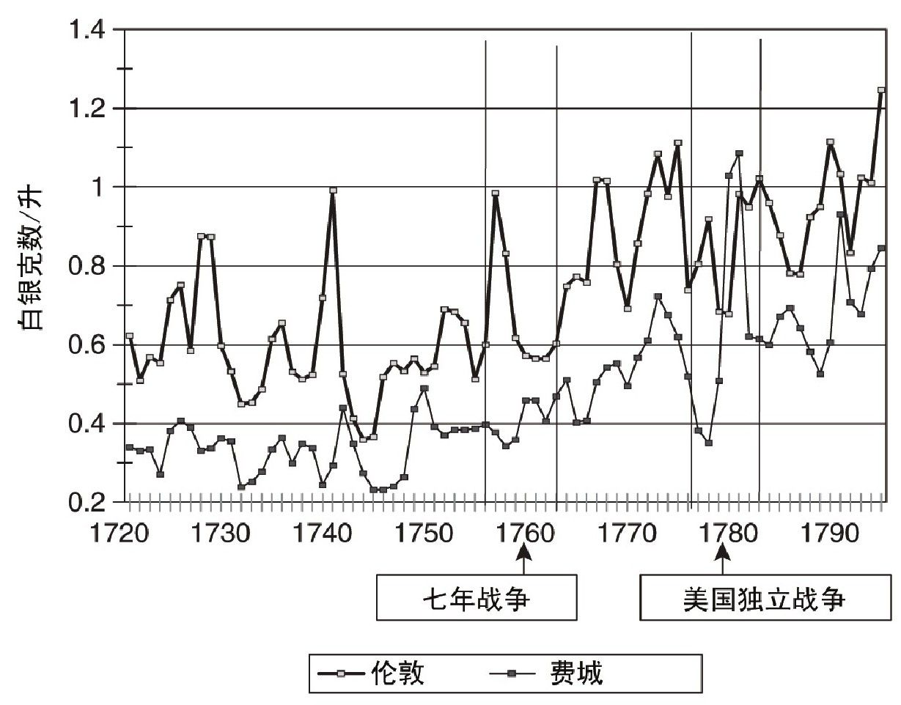
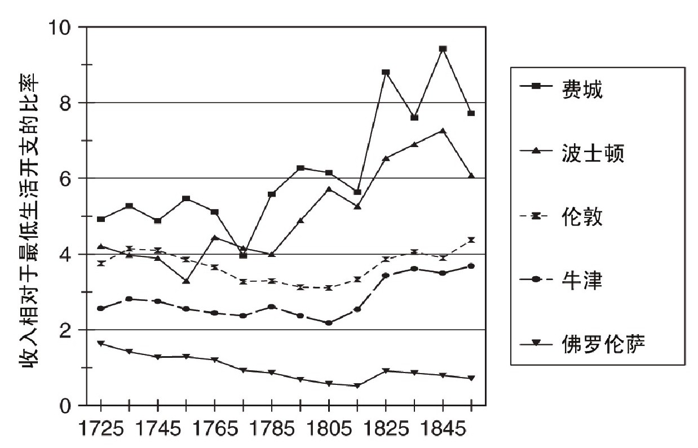
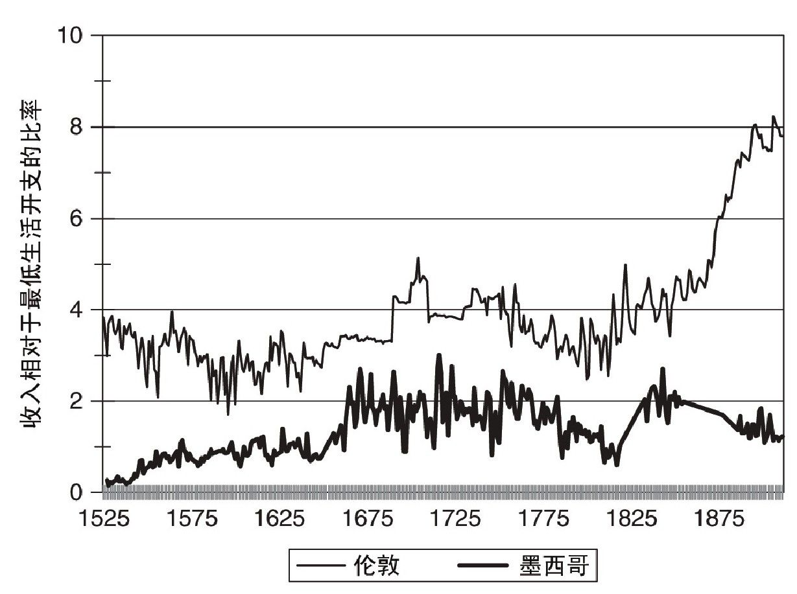

美洲融入世界经济对于新旧两个世界都有着重要意义。美洲土著人数锐减，土著文明被欧洲文明所取代。北欧由此走向工业化，而南北美洲恰好为世界范围内的南贫北富格局提供了佐证。
南北美洲的不同发展轨迹可以追溯到殖民时期，其根源在于地理和人口差异。南美洲住着绝大多数土著人，并且有着最多的财富。同时，它离欧洲也最远。这些差异最终导致了今天我们所看到的收入差距。
地理是关键因素，因为它影响到不同地区与欧洲进行贸易的能力。对于经济增长而言，贸易产生的影响可能是积极的，也可能是消极的。一方面，廉价的英国产品抑制了工业化进程。另一方面，当地农产品出口对于殖民进程和农业发展起到了巨大的推动作用，而这些进步可能成为后续工业化的跳板。在这方面，北美洲更受青睐。首先，它离欧洲更近，而欧洲是殖民地出口产品的主要市场。在航运成本较高的情况下，北美地区相比南美地区可以生产和出口更多种类的产品。美洲内陆地区的地理环境进一步加强了北美地区的优势。北美洲东部沿海地区面积广大，土壤肥沃，足以支撑一定规模的经济发展，圣劳伦斯河、莫霍克—哈德孙河和密西西比河连通内陆地区。拉丁美洲的情况正好相反。大多数经济活动发生在墨西哥的内陆地区和安第斯山脉附近。河流并没有连通内陆与海岸，因此出口成本很高。
人口因素同样重要。美国、加拿大和南美洲大部分地区气候宜人，对于欧洲人来说几乎没有疾病威胁，因此他们在这些地区很快就开始繁衍生息。与之相比，热带疾病导致欧洲人在加勒比海地区和亚马逊河流域大量死亡，从而抑制了欧洲人口在当地的增长势头。
土著人在美洲大陆上的分布并不均匀。大多数土著人居住在墨西哥（2，100万人）和安第斯山脉（1，200万人）。住在美国境内的土著人只有约500万人，在美国建国初期十三个殖民地的范围内只有25万人。人口差异体现出地理因素的影响。墨西哥和秘鲁是当地主要食物的天然发源地，这些食物包括：玉米、豆类、西葫芦、西红柿和藜麦。后来土著人就在原来的地方开始人工培育这些植物，因此它们已经适应了当地的自然环境。此外，当地比世界上任何地方都要更早培育这些植物。比如，早在4，700年前，他们就已经开始人工培育玉米和豆类。因此，在科尔特斯于1519年到达这里之前，墨西哥人有长达4，200年的充足时间来繁衍生息。当然，玉米、豆类和西葫芦具有很强的散播能力，但它们的遗传和种植必须适应不同的自然环境，这减缓了它们的散播速度。举个例子：如果把玉米从热带移植到温度更低的环境中，玉米的生长期必须从通常的120天至150天减少到大约100天。直到公元1000年左右，人们才最终实现了玉米的移植。在此之前，在美国和加拿大的东部地区，玉米的种植范围都很小，因此在欧洲人抵达之前，土著人在北美洲东部地区繁衍生息的时间并不长。
对于土著人来说，欧洲人的到来是一场浩劫。据保守估计，1500年土著人口大约为5，700万。到了1750年，这个数字锐减到大约500万。绝大多数人死于欧洲人携带到美洲的各种疾病，如天花、麻疹、流感和伤寒，土著人对于这些疾病没有任何抵抗力。剩下的人死于战争、奴役和虐待。
虽然土著人出现了人口锐减的情况，但南北美洲受到的影响不尽相同。在墨西哥，土著人口减少幅度超过90%。17世纪20年代，当地人口达到历史最低点，为75万人。但这一数字依旧是欧洲人到来前夕美国东部地区总人口的三倍。在安第斯山脉，1718年至1720年爆发的一场流行病让土著人口减少到不足60万人。17世纪中期之后，墨西哥人口出现反弹，1800年达到350万人，安第斯山脉的土著人口达到200万人。虽然西班牙人在过去的三个世纪里不断移民，但土著人依旧占到这些地区总人口的3/5，并且混血儿占到1/5。剩下的1/5人口是相对富裕的白人，他们是殖民地的统治者。对于这些地区的长期发展而言，这样的种族结构和经济结构具有负面影响。
北美地区的情况截然不同，因为这里的土著人口并不多。1500年，25万人居住在东海岸。到了1890年美国第一次对土著人进行人口普查时，他们只剩下14，697人。人口减少主要发生在17世纪，而且是在欧洲人开始殖民之前。在“五月花号”于1620年抵达马萨诸塞之前，一场流行病侵袭了这一地区，从1617年一直持续到1619年。“五月花号”上的乘客将这视为上帝的护佑：“就这样，上帝从一开始就保佑着我们……他清除了大量土著人……就在我们到达那里的前不久，为我们腾出了空间。”随后，持续了五十年的战争消灭了剩余的土著人。土著人的高死亡率和殖民者的低死亡率意味着，美国殖民地很快就成了英格兰的翻版。不过，美国南部的殖民地走了另一条发展道路，欧洲人从非洲掠夺奴隶，到那里从事苦力劳动。但土著人虽然在当地存活下来，却并没有像在格兰德河以南地区那样阻碍北美殖民地的发展。
开拓殖民地是美国殖民时期历史的主题。一些殖民者，尤其是那些来自新英格兰地区的人不想再屈服于另一种信条，他们渴望在新大陆实现宗教自治。不过，驱使大多数殖民者来到这里的原因还是经济收益，就连清教徒也希望马萨诸塞的生活水平能够赶上英格兰。
在英属北美地区，殖民与出口紧密相关。加拿大经济学家哈罗德·英尼斯提出了“物产理论”，着重强调这种关系。根据这一理论，加拿大这样的地区的经济增长取决于出口到欧洲的产品，如鳕鱼、毛皮和木材。出售这些产品的所得被用于购买欧洲的制造品，如布料、工具、陶器、图书等。这些产品都是从英国进口，而不是在殖民地自行生产的，因为英国的产业规模足够大，实现了规模经济，这意味着相比殖民地的小企业，英国公司的生产效率更高。“农民认为，用牛和谷物去换取布料，比自己生产布料更加有利。”英国的航海法案将荷兰人和法国人摈除在外，不让他们参与殖民地贸易。
殖民地的物产经济有三个特点。首先，物产在殖民地的售价低于在欧洲的售价，并且差额等于运输成本。两个市场的价格同步波动，因为贸易将它们联系在一起。其次，出口占到殖民地收入的很大一部分，剩余的收入来自服务业。最后，殖民者得到的收益超过在欧洲的收益，差额足以支付移居殖民地的成本和抗击移居的风险。
宾夕法尼亚殖民地体现了这三个特点。它建立于1681年，以种植小麦为主，小麦是当地的主要物产。宾夕法尼亚将小麦出口到西印度群岛、伊比利亚半岛和英伦诸岛，为此它必须与爱尔兰和英格兰的农产品展开竞争。结果，费城和伦敦的售价同步波动。从图14中可以明显看出这种同步性。七年战争时期（1756年—1763年）和美国独立战争时期（1776年—1783年）属于例外情况，因为在这两段时期内，贸易遭到破坏，价格关联也不复存在。除了小麦和面粉，宾夕法尼亚殖民地还出口木材、船只、铁和钾碱，从海上商贸活动中获取外汇。对于殖民地经济而言，出口非常重要，1770年出口量占到总产量的约30%。出口所得用于购买英国生产的消费品。

图14 小麦价格
随着经济增长，宾夕法尼亚殖民地吸引了更多的欧洲人。18世纪，费城的真实工资与英国的变化趋势保持一致，但费城的工资水平更高一些，因为要给殖民者一定的补偿，以吸引他们移居到遥远的未开发地区（参见图15）。英格兰和北美殖民地都很繁荣，工资水平相当于最低生活开支的4倍至5倍。与之形成反差的是佛罗伦萨，到18世纪末期，当地工资已经跌至最低生活开支的水平。
如图15所示，新英格兰的经济表现不那么尽如人意。18世纪早期，马萨诸塞地区的工资水平与伦敦的持平，但低于宾夕法尼亚地区的。虽然人们在回顾美国历史的时候，总是把马萨诸塞视作殖民地的代表，但实际上那里的经济发展并不稳定，因为缺乏一种农业物产。当地的出口产品主要是鱼类、牲畜、鲸鱼油脂以及包括船只在内的木制品。新英格兰地区的居民建立起庞大的海运业，从中获得巨额外汇。这惹恼了英国商人，因为殖民地与本国展开了竞争。这些商业活动没能迅速扩展，因此新格兰地区劳动力需求的增长速度赶不上人口的增长速度。结果就是，当地工资水平下降，人口持续外迁。

图15 非熟练工人的工资水平，欧洲和美国
虽然物产理论最初被用于解释加拿大的经济状况，但最佳案例却是加勒比海地区的糖料作物殖民地。欧洲人最早接触到食糖是在巴勒斯坦，当时正值十字军东征时期。随着他们被驱逐出境，食糖生产随之转移到塞浦路斯。最终，他们开始在大西洋的岛屿上种植糖料作物。1485年，葡萄牙人占领了圣多美，这成为历史的转折点，他们开始在那里尝试用非洲黑奴作为劳力，大面积种植糖料作物。后来这一体系被引入巴西和加勒比海地区，事实证明，这一做法在那里可以获得丰厚利润。17世纪和18世纪，巴巴多斯、牙买加、古巴和圣多曼格（现在的海地）是世界上部分最富裕的地区。
加勒比海地区的殖民地种植糖料作物和包括咖啡在内的其他作物，并将产品出口到欧洲。欧洲投资者提供资金，非洲黑奴则提供劳动力。相比欧洲移民，黑奴作为劳动力，价格更为低廉。糖料作物种植园里的死亡率非常高，由于奴隶极为廉价，因此补充奴隶的主要方式是购买新的人手，而不是自然繁衍。被带到英属西印度群岛的奴隶共计400万人，到1832年黑奴获得解放时，只剩下了40万人。出口量决定了殖民地经济的规模。1832年，牙买加的糖、咖啡和其他热带产品的出口量占到总收入的41%。其他收入来自为种植园提供的辅助性服务（为奴隶提供食物，供应其他物资，提供船运和交通服务，派备司法与治安人员，以及为辅助工人提供住房）或种植园主的消费开支（主要用于仆役和庄园）。种植园主在殖民地的开支只占到收入的很小一部分，他们把大部分收入寄回英国，而不是在牙买加进行投资。
美国的南方殖民地有许多特点与加勒比海地区类似。南方地区拥有值钱的物产——在南卡罗来纳地区是稻米和靛蓝，在弗吉尼亚和马里兰地区是烟草。生产这些作物的种植园起初雇用英国契约劳动力，后来改用非洲黑奴。南方比北方殖民地更加富裕，因此吸引了更多定居者，同时也聚集了大多数的黑奴。
南卡罗来纳殖民地始建于1670年。但是，当时的殖民者缺少“适合欧洲市场的商品，他们拿得出手的只有一些从印第安人手中购得的毛皮，再加上一些雪松。他们就把雪松装满船只，带上毛皮前往伦敦”。随后的几十年里，他们一直在寻找一种能获取利润的物产。最终，他们偶然发现了稻米。当地的稻米出口量从1700年的人均69磅增加到1740年的人均900磅。奴隶进口数量从1700年的275人增加到1740年的2，000人。种植技术的进步使得种植面积和劳动生产率提高了50%。在种植稻米的沿海地区，当地社会结构变得越来越像加勒比海地区。出口占到沿海地区总收入的30%以上。这里的经济围绕稻米发展，正如牙买加的经济围绕糖料作物发展一样。在总人口中，黑人占到绝大多数。
白人在最南部地区占到人口总数的一半，他们退到内陆地区，在那里家庭式农场成为主要的经营模式。他们自己种植食物，但远谈不上自给自足，因为他们为种植园提供食物，用获得的收入来购买英国布料和其他消费品。弗吉尼亚和马里兰地区情况类似，烟草成了出口物产。
英属殖民地在经济和社会不平等方面有着明显差异。新英格兰地区和濒临大西洋的中部地区最为平等。这些地方也有奴隶，但在农业生产中，奴隶制并不重要——不是因为道德观念或技术障碍，而是因为收入不足以支付由此产生的成本。这些地区面积广袤，因此土地价格不高，这意味着大部分收入都以工资的方式累积，并且收入必然被分配给数量众多的劳动者。处于另一端的是加勒比海地区的殖民地，那里的大多数人都是奴隶，受到极不公平的对待。美国南部殖民地处于这两者之间，一方面种植园内存在不平等现象，另一方面边疆地区人数不多的农民信奉人人平等。
不过，北美地区所有的殖民地拥有一个对未来发展十分有利的共同优势——具备读写能力的白人殖民者的比率至少和英格兰本土的保持一致，处于世界领先位置（参见表4）。到美国独立战争时期，弗吉尼亚和宾夕法尼亚地区70%的自由人能够自行签名，而英格兰同期具备读写能力的人口比率为65%。在新英格兰，这一数字接近90%，这多亏当地政府建立学校并严令民众接受教育。
为什么殖民地具备读写能力的人口比率如此之高？原因和英格兰的一样：经济优势。殖民地的生活水平取决于贸易和外国市场，这意味着阅读、写作和计算能力能带来收益。司法体系同样增加了读写能力的价值，因为合同和土地所有权都是通过书面文件确立的。在马萨诸塞地区，或许是清教徒渴望阅读《圣经》的缘故，当地具备读写能力的人口比率超过了英格兰和宾夕法尼亚，但更重要的是，当地经济依赖贸易和航运，因此居民有强烈的经济动力去接受学校教育。
拉丁美洲的不同地区采取的发展道路各不相同，并且都不同于美国模式。我们需要区分以下几个地区：（1）加勒比海地区与巴西；（2）南部的锥形地带（阿根廷、智利、乌拉圭）；（3）墨西哥和安第斯山脉。
我们已经讨论过加勒比海地区的经济模式，巴西的发展与之类似，只不过规模更大，因为巴西的土地面积更大。巴西距离欧洲足够近，可以出口糖料到欧洲。葡萄牙人在16世纪早期从圣多美将糖料作物引入巴西。起初，种植园里使用的是土著奴隶，但随即非洲黑奴取代了他们，第一次物产繁荣很快到来。1580年至1660年，葡萄牙与西班牙合为一体。荷兰与西班牙之间的战火波及葡萄牙。1630年至1654年，荷兰人占领了巴西出产糖料的省份伯南布哥。他们在离开时带走了糖料的生产工艺，并将糖料作物引入加勒比海地区。这里距离欧洲更近，相比巴西的竞争者，他们占据了有利位置：阿姆斯特丹的糖料价格从1589年的每磅3/4荷兰盾下降到1688年的每磅1/4荷兰盾。在这一价位上，巴西的种植园无法与之竞争，巴西的糖料繁荣就此终结。此后的三个世纪里，巴西的主要物产不断更替：先是黄金（18世纪早期），接着是咖啡（1840年—1930年），然后是橡胶（1879年—1912年）。在每个阶段，巴西都将产品输出到欧洲，并将奴隶或殖民者带回本国从事种植。和加勒比海地区的糖料一样（但和美国的情况不同），巴西的物产繁荣没有转变成现代化的经济增长，这究竟是为什么？
拉丁美洲南部的锥形地带和北美的情况类似，当地土著人口不多，并且最终因为疾病、战乱和欧洲人的迫害而消亡殆尽。潘帕斯草原出产的牛肉和小麦不逊于宾夕法尼亚地区的，但阿根廷距离欧洲太远，在殖民时期不可能将这些东西运往欧洲。阿根廷所能出口的物品只有少量兽皮。智利距离欧洲更加遥远。正经说起来，这些国家的经济史只能追溯到19世纪中期，当时远洋船只经过改进，足以将当地物产出口到欧洲。
最为重要的西班牙殖民地是墨西哥及安第斯山脉。欧洲人的征服决定了当地的发展轨迹。在地广人稀的北美洲，殖民者见到的土著人依然采取刀耕火种的原始农耕方式；但在这里，西班牙人见到了密集的人口、庞大的城市、发达的农业、像欧洲一样等级鲜明的政治和宗教组织，还有大量的黄金白银。征服者推翻了阿兹特克帝国和印加帝国，成为当地的统治者。他们掠夺黄金白银，还压制本土宗教，焚烧经文，用天主教来取代本土宗教的地位。土著人沦为附庸种族，不得不竭力满足征服者的贪欲。数以万计的西班牙人来到美洲，寻找发财的机会。
阿兹特克帝国和印加帝国的君主大肆剥削臣民，不仅要求他们进贡，还要他们提供劳役。西班牙人照搬了这一做法。土著人的工资低得惊人：16世纪30年代，一名全职工作的墨西哥土著人只能挣到1/4的基本生活必需品（参见图16）。这不足以养活一家人。虐待土著人的情况极其严重，西班牙国王因此于1542年下令禁止以土著人作为奴隶，并且限制了征服者的权力。
与此同时，土著人虽然数量大幅减少，但由于幸存人数较多，依然有剥削价值。策略之一是强制劳动。16世纪70年代，西班牙人重新启用印加帝国曾使用过的一种劳役制度——“米塔制”，以便为波托西地区的银矿开采提供人手。墨西哥则采取阿兹特克帝国用过的强制劳动形式——“劳役摊派制”。西班牙国王还把无人居住的土地赐给西班牙人作为领地，称为“大庄园”。到17世纪早期，墨西哥谷地有超过一半的农业用地被富裕的西班牙人以这种方式占有。剩余土地归土著人共同所有，实行轮耕制。这种由大量土著人集体占有土地的情况在北美殖民地并不存在。
这一地区与北美相比，另一个重大差异是地理环境，正是地理环境导致秘鲁和墨西哥无法出口农产品。秘鲁距离欧洲太远，因此无法出口产品，这不足为奇。事实上，美洲西海岸的市场与亚洲而不是欧洲结合得更加紧密。西班牙人在墨西哥的阿卡普尔科与菲律宾的马尼拉之间航行，用银币来交换中国的丝绸和茶叶。18世纪晚期，“法国、英国和美国的无数船只”从现在的英属哥伦比亚的土著人手中购买海豹皮，然后到中国贩卖。“海豹皮的价格在美洲沿海地区上涨，在中国却大幅下跌。”

图16 非熟练工人的工资水平，墨西哥和伦敦
墨西哥的情况更令人困惑。紧靠加勒比海的港口城市韦拉克鲁斯离欧洲的距离与新奥尔良离欧洲的距离不相上下。但墨西哥的问题在于，要想在沿海地区与海拔数千米的内陆高原之间运输货物，需要高额成本。从韦拉克鲁斯到墨西哥城的道路就“修了”好几次——先是在18世纪中期，后来在1804年又修了一次。不过就连那时，货物运输依旧靠骡子，而不是用车辆。这样的方式代价太大，不管是进口还是出口农产品都无利可图，对于当地制造业的保护程度也减弱了。同时，西班牙人的法律禁止墨西哥与其他国家进行贸易，意在将殖民地市场留给西班牙制造商，这种做法进一步加剧了墨西哥的孤立状况。
可以说，墨西哥和安第斯山脉地区能出口的产品只有一种，那就是白银。西班牙人在征服土著人之后，立即开始搜寻贵重金属。最大的发现包括位于玻利维亚的波托西银矿（1545年发现）以及位于墨西哥的萨卡特卡斯银矿（1545年发现）、瓜纳华托银矿（1550年发现）和松布雷雷特银矿（1558年发现）。
以白银作为主要出口商品极为不利，墨西哥和安第斯山脉地区因此无法复制北美的发展轨迹。首先，白银有通胀压力。秘鲁和墨西哥经济的基础就是铸造钱币，因此货币供应的增加推动了当地物价和工资上涨，超过了世界水平。比如，小麦在墨西哥的价格是在阿姆斯特丹的4倍至10倍。墨西哥的工资水平是意大利或印度的两倍，而安第斯山脉地区的工资又是墨西哥的两倍。这些差距之所以能一直维持，就是因为运输成本太高，西班牙对贸易进行限制（这导致廉价的进口商品无法进入这些地区，虽然走私一直都存在），以及西班牙制造业本身的成本过高（它同样受到新世界白银的通胀压力）。其次，白银并没能带来大量的工作岗位。1597年，墨西哥银矿雇用了9，143人；1603年，波托西银矿雇用了1.1万人至1.2万人。到1790年左右，波托西的就业人数下降到4，959人。和劳动力总数相比，这些数字可以忽略不计。和北美地区从事出口农产品生产及供应的人数比起来，这些数字也少了许多。最后，银矿收入的大部分落入少量富人手中，并未惠及大多数人。因此，白银是导致拉丁美洲出现高度不平等的原因之一。
参照北美模式来看，墨西哥经济算不上物产经济。1800年，出口只占到国内生产总值的4%。墨西哥经济的绝大部分与出口无关。因此，墨西哥的收入分配法则不同于英属殖民地的。在北美地区，出口机遇促使欧洲的劳动力和资本来到殖民地，要想取得收益，他们必须回到英格兰，在那里殖民地要尽力吸引更多殖民者和更多投资。在墨西哥，工资水平由内部因素决定，包括强迫土著人劳动，均衡土地与劳动力，以及提高经济体的运行效率。在1650年之前的人口锐减时期，前两个因素最为重要，而在随后的人口增长时期，第三个因素起到了决定性影响。
在1650年之前，墨西哥经济呈现出一种前工业化经济体的共有模式：人口与工资构成反比。当西班牙人于16世纪20年代来到这里时，当地人口众多，工资水平较低（参见图16）。事实上，征服者将工资压得更低，超过了人口数量所能产生的影响。随着土著人口的锐减，真实工资开始上升（虽然西班牙人试图强迫土著人劳动），并在17世纪中期达到收入与最低生活开支大致相当的水平。在这种情况下，一名全职劳动者可以养活全家，让家人都过上最低水平的生活。
在1650年之后，墨西哥人口开始增长，从原先的100万至150万上升到1800年的600万。就在同一时期——这一点极为关键——人口与工资之间不再呈反比关系：虽然人口一直增长，但工资上升到最低生活开支的两倍。只有在劳动力需求大于供给的情况下，才会出现劳动力供应与工资同时增长的局面。劳动力需求的增长反映出整个经济体各部门生产效率的提高。农业的改变源自欧洲作物和动物（小麦、绵羊、牛）与当地作物（玉米、豆类、西葫芦、西红柿、辣椒）的结合。依靠来自欧洲的耐干旱动物（马和骡子），交通运输取得了巨大进步。制造业的动力来自两个方面，一是新产品（羊毛布料）的生产，二是特定区域内生产的集中，这些区域有助于劳动分工。正是这些特征使得英国工业在生产效率方面超过美国，同时也阻碍了殖民地的制造业发展。当然，拉丁美洲经济的扩展在西班牙的统治下进行，并说明了西班牙的政策无论多么不自由，并没有对经济扩张产生根本性的负面影响。
虽然墨西哥经济在殖民时期开始成长，但墨西哥社会具有明显的不平等结构。法律将该国居民划分为五个种族类别，这一分类方式与经济差异吻合。一份研究显示，西班牙上层阶级（占总人口的10%）占有总收入的61%，而土著农民（占总人口的60%）只拿到了17%。相比北美的新英格兰地区和大西洋沿岸中部的殖民地，墨西哥的不平等状况严重得多，可能与加勒比海地区和美国南部种植园地区的情况类似，不过确切的数据现在还无法获得。当地独立后，严重的不平等状况阻碍了经济的发展。
1776年，美国脱离英国统治，宣布独立，并建立起自己的行政体系。1787年，美国宪法生效。在内战之前（1790年—1860年），美国经济快速发展。人口增加了8倍，人均收入翻了一番。
我们可以把美国战前的经济状况视为物产理论的另一个案例。
烟草、稻米和靛蓝不再是出口的主要产品，它们让位于最重要的物产，那就是棉布。随着工业革命的开始，英国对于棉纤维的需求急剧上升。佐治亚地区种植了棉花，但并没有以此作为主要赢利手段，直到伊莱·惠特尼于1793年发明了轧棉机，才改变了这一局面。随后棉花种植遍及美国南部。由于棉花都是在使用黑奴的大型种植园内培育，因此黑奴进口大幅增长，直到国会于1808年禁止了奴隶贸易。在接下来的半个世纪里，奴隶人口的增长依靠自然繁衍，棉纺织业迅速扩张，这为棉花种植面积的扩大提供了经济激励。19世纪50年代，种植棉花的利润极其可观，如果不是因为内战（1861年—1865年），奴隶制也不会走到尽头。
物产理论认为，棉花出口带动了整个美国经济。根据这一看法，中西部地区农业生产的扩张是为了给种植园提供食物——这一结论颇有争议。棉花对于东北部地区的工业化也有着促进作用，因为南部的种植园和西部的农场为工业产品提供了市场。
美国的工业化也有赖于四项积极政策，这些政策构成了19世纪经济发展的“标准模式”。第一项政策是大众教育。殖民时期就已经在这方面取得了巨大的进步。到了19世纪，教育进一步发展，并且受到经济激励的影响。另外三项政策最早由亚历山大·汉密尔顿在《制造业报告》（1792年）中提出，分别是：（1）改善交通，扩大市场；（2）建立国家银行来稳定货币，确保贷款供应；（3）建立关税，保护当地工业。如果没有关税保护，南部和西部地区购买的制造品就不可能引导美国走向工业革命，因为英国可以满足相关需求，就像之前在殖民时期那样。
美国参议员亨利·克莱将汉密尔顿的提议称为“美国体系”，但自从弗里德里希·李斯特推广这一模式之后，许多国家都采用了这一体系。宪法本身就是实施这一策略要走的第一步，因为宪法废除了地方关税，从而为全国性市场打下了法律基础。其余的发展步骤包括：（1）1811年至1818年，建设坎伯兰大道，将波托马克河与俄亥俄河连接起来；（2）1817年至1825年，开挖伊利运河，将哈德孙河与伊利湖连接起来；（3）1791年和1816年，分别成立合众国第一银行和第二银行；（4）自1816年起，废除一系列内部关税。
在1816年之前，美国关税不高，但拿破仑战争将美国航运作为打击对象，于是美国采取了保护性措施，宣布贸易禁令，并于1812年对英国宣战。在这些壁垒背后，美国的制造业开始扩张。拿破仑于1815年战败后，美国于1816年颁布新的关税措施来保护本国制造业，对于大多数进口商品征收20%的关税，纺织品关税更是高达25%。1824年和1828年，税率进一步提高，但是高关税引发了争议，因此1846年，美国又再度降低关税。
随着北方利益集团掌控了国家领导权，保护主义成为美国的主导政策。内战增加了美国对于联邦收入的需求，于是它再度调高关税，并于1861年颁布《莫里尔关税法》。接下来的一个世纪里，税率一再提高，最终在1930年颁布的《斯姆特—霍利关税法》中达到顶点。英国则走上相反的道路，它于1846年撤销了谷物法，又在三年后撤销了航海法案，由此开始了自由贸易之路，直到1932年才重新施行关税。其他国家大多也以同样的方式来应对大萧条。直到第二次世界大战后，美国才着手去除保护，因为它发现进入其他国家的市场比保护本国市场更为有利。
在关税壁垒的保护下，美国的棉纺织业快速增长。19世纪50年代，英国拥有世界上最大的工业规模，每年消耗的原棉重量达到29万吨，美国排名第二，达到11.1万吨，遥遥领先于排名第三的法国（6.5万吨）。如果亚历山大·汉密尔顿和亨利·克莱看到，棉布出口如此有助于经济增长，他们一定会感到欣慰。
不过，这样的结论夸大了物产出口的重要性。首先，虽然棉布（以及后来的小麦）是换取外汇的主要商品，但在1800年至1860年期间，出口产品的价值只占到国内生产总值的5%至7%。这一比重远低于宾夕法尼亚和南卡罗来纳沿海地区的数据（30%），更不用说牙买加的（41%）。棉布和小麦的出口量还不足以推动战前的经济发展。其次，劳动力市场的表现比物产理论预测的更为出色。18世纪，宾夕法尼亚的真实工资略高于英格兰的，当时美国殖民地正在发展，吸引大批欧洲移民前来，因此这是预料之中的结果。随着美国赢得独立，而欧洲却陷入战乱，大西洋两岸的劳动力市场不再一体发展，美国的真实工资继续上升，而英国的工资在工业革命期间停滞不前。19世纪30年代，美国的真实工资已经是英国的两倍。如果物产理论成立的话，那么美国的真实工资不应该这么高，因为拥入美国的移民将迫使工资降到更低的水平。
国内生产总值和工资水平的提高说明美国已经有能力依靠自身努力来提高生产效率。物产理论的主要问题是，一个经济体以什么样的方式，发展到了什么时候，可以不再依赖主要出口产品。很显然，美国在19世纪上半叶完成了这一转变。
对此，普遍接受的一种解释是英国经济史学家哈巴卡克提出的设想，他认为边疆地区充足的荒地催生了高工资——如果人们可以移居西部，从头开始经营一个农场，谁会愿意接受纽约或费城等地的低工资呢？这种情况将引导企业投资于节省劳动力的技术，从而提高人均国内生产总值，并最终把工资提高到新的水平。我们在第四章已经讨论过，在过去的两个世纪里，美国、英国和荷兰是少数几个持续追求高生产率和资本密集型技术的国家。
事实上，我们可以看到，在棉纺织业中这些因素都在产生影响。纺织业的成功需要人手，但人手并不够。棉纺织业的成功离不开能大量节省劳动力的技术突破。从18世纪70年代起，劳动力的高成本迫使美国企业尝试机械生产，但要想在商业上取得成功，工人和管理层都需要精通这项技术。1793年，塞缪尔·斯莱特建造并负责管理第一家在商业上取得成功的加工厂。下一个突破由波士顿制造公司完成，他们于1813年在马萨诸塞州的沃尔瑟姆建造了一家将纺纱和机械织布融为一体的加工厂。工厂的创始人弗朗西斯·卡波特·洛厄尔曾到访英国并见到机械织布机，回到美国后他凭借记忆画出了机器草图，并创办了这家企业。生产模式由洛厄尔手下的工程师保罗·穆迪设计完成。洛厄尔—穆迪体系最重要的特点在于，他们在引进英国技术之后对其做了大幅调整，以适应美国的环境。19世纪20年代，美国的真实工资已经高于英国了。于是，美国以更快的速度采用了动力织布机。在工业技术方面，美国领先于全世界。
美国的领先优势不仅限于棉纺织业。1782年，奥利弗·埃文斯建造了第一家面粉自动加工厂。在19世纪前，每把手枪或步枪的扳机装置都不尽相同，制造枪械的匠人必须将每个部件与配套的其他部件装配在一起，才能保证装置顺利使用。法国人奥诺雷·勃朗和美国人伊莱·惠特尼最早提出设想，并尝试采用可相互替换的部件。但直到1816年左右铣床发明之后，大规模生产同等规格的零部件才成为可能。19世纪20年代，美国政府设在斯普林菲尔德和哈珀斯费里的兵工厂制造出可相互替换的零部件，适用于滑膛枪。1851年，在水晶宫博览会上展出的美国武器给英国人留下了深刻印象，他们派出一个代表团专门研究“美国体系”。零部件的可替换性这一理念先是传播到像柯尔特那样的私营军火商那里，随后在19世纪中期又影响了手表制造商，紧接着是自行车、缝纫机、农用机械等产品的制造商，最后又影响了汽车制造，可替换性成为福特的流水线体系的一部分。美国经济的成功取决于创新技术在工业领域内的全面应用。劳动力的高成本促使美国人采取机械化的生产方式。要想对此做出成功的回应，就要有大量潜在的发明者。挑战与回应之间的相互作用成就了美国，在第一次世界大战来临的时候，美国已经成为世界范围内生产效率的领先者。
西班牙帝国延续了三百多年，它将君主与殖民地的白人精英阶层联系在一起。18世纪，西班牙波旁王朝的君王们试图建立一个现代的财政和军事国家，但殖民地抵制了他们的敛财命令。不过，抗拒来自马德里的指令并不是最严重的问题，真正的麻烦源自殖民社会中种族与经济的分化格局。1780年，秘鲁爆发了图帕克·阿马鲁起义，白人的人身安全和财产安全遭到普遍威胁。这只是令白人不快的众多事件之一，它提醒了白人，社会金字塔的底层有多么危险。1808年，拿破仑入侵西班牙本土，西班牙统治下的美洲殖民地意外获得独立。事实上，这些国家完全是被动地接受了这一结果。重建帝国显然不可能。在墨西哥，米格尔·伊达尔戈于1810年率领土著人起义，反对当地占据统治地位的“出生在半岛上的西班牙人”（指出生在西班牙本土的白人）。起初，这次行动吸引了克里奥人（指出生在墨西哥的白人）参与，但土著人的暴力行为针对全体白人，双方无法共同反对西班牙，最终起义遭到镇压。1821年，墨西哥获得独立，起因是克里奥人发动了一场政变，试图保住他们的特权地位，因为他们担心西班牙国内的自由主义势力抬头，会威胁到他们的利益。
独立之后，墨西哥遭遇了几十年的经济停滞，究其根源，还是在于殖民社会的两难境地。18世纪晚期，更为激烈的国际竞争已经开始破坏墨西哥的制造业，结果就是像印度那样的去工业化。亚历山大·冯·洪堡解释道，“普埃布拉镇过去以制作精美的德福特陶器和帽子而闻名”，在“18世纪的头几年”，“这两个行业[出口的商品]繁荣了阿卡普尔科与秘鲁之间的贸易往来”。然而，从欧洲进口的商品破坏了这一贸易关系。
1780年的真实工资相当于最低生活开支的两倍，到了19世纪30年代，真实工资已经降到了最低开支的水平。
纺织业同样受到英国进口商品的冲击。墨西哥的大多数布料由羊毛纺织而成，棉布要从加泰罗尼亚进口。18世纪90年代，英国对西班牙实施封锁，切断了进口商品的来源，棉布生产才在普埃布拉开始起步。这段繁荣期时间很短，因为1804年后，西班牙的进口商品重新进入墨西哥，而且在独立之后，全国到处都能见到廉价的英国布料。墨西哥的棉纺织业发展受挫。对此墨西哥采取的策略类似于亨利·克莱的美国体系以及李斯特向德国提出的建议。时任内政与外交部长的卢卡斯·阿拉曼开始对进口的棉纺织品征收关税，并且将部分税收用于组建阿维奥银行，专门为新工厂提供资金，用于购买设备。不过，墨西哥并没有建立全国性市场，因为地方性关税依然存在，并且交通没有得到任何改善。大众教育也被忽略了。
结果同样是喜忧参半。一方面，从1835年至1843年，墨西哥新建了约35家棉纺纱厂。自1840年后，真实工资水平也重新提高。另一方面，当地缺少发展工程行业的激励因素，因为机器都依赖进口，安装机器并监控操作的工程师同样来自外国。同时，这些新建的工厂前途渺茫。在19世纪中期，棉纺织业处于停滞状态，其他行业的发展也不值一提。墨西哥没有出现美国式的整体进步。
下一波经济增长要等到迪亚斯时代。1877年至1911年，墨西哥处于波菲里奥·迪亚斯的独裁统治之下，故此得名。迪亚斯比阿拉曼更加积极地推行19世纪的标准发展策略。通过大量建造铁路，废除各州的商品过境税，迪亚斯成功建立起了全国性市场。他还利用关税来保护墨西哥工业。他采取了一项创新政策，那就是借助外国投资来为企业提供资本，而不是依赖本国的投资银行。外国投资还成为了引入先进技术的渠道。
在迪亚斯时代，经济发展取得了一定成功，但依然存在不足。一方面，墨西哥取得了一些令人瞩目的工业发展。人均国内生产总值从1870年的674美元上升到1911年的1，707美元。另一方面，墨西哥所取得的技术进步几乎与本国人员无关，因为外国工程师的任务只限于建造由外国公司设计的工厂，这意味着相关进步只限于国家扶持的行业。而且，增长带来的收益被少数人占有。在迪亚斯统治时期，真实工资呈下滑趋势。1911年，革命终于爆发。
为什么美国经济的增长速度远远快于墨西哥呢？有一种颇具影响力的解释将美国的成功归因于该国制度的“高品质”，而将墨西哥的表现归咎于该国制度的“低品质”。但到底是哪些制度在起作用？美国的优势源自一整套英国体系，包括财产权和法院、立法机构（和司法机构）对行政机构的钳制、人人平等的思想（但不包括南方地区）、民主和自由放任政策（但不会因此放弃关税）。墨西哥的劣势包括土著人对于土地的集体所有权、社会与种族的极度不平等、将殖民遗产中最糟糕的部分永久继承下来的政治体系——各级法院之间的判罚互相矛盾，政府过度管制商业活动，税收系统效率低下（虽然根据殖民时期的经济增长幅度，人们有理由怀疑这一因素的重要性）。
经济政策对于经济的影响力超过上述的制度因素。美国于19世纪初率先采取标准发展策略。宪法废除了地方关税，加上新技术（蒸汽船、铁路）的发明使交通条件得到改善，美国由此建立起全国性市场。自1816年起，美国开始采取保护性关税措施，并建立全国性银行体系来稳定货币。最后，大众教育早在殖民时期就已开始。墨西哥也在逐步推进这些政策——19世纪30年代，墨西哥建立起关税和银行，但在1880年之后才建立全国性市场，直到20世纪晚期才推行大众教育。教育政策的差异有助于解释两个国家的不同发展轨迹。
不同的技术发展道路体现了技术供求关系的差异。一方面，早在1800年，美国的真实工资就已远远高于英国的水平。高工资产生的额外费用促使企业采用能够节约劳动力的机械设备。随着新发明的出现和生产率的提高，工资进一步增长，于是整个过程不断循环强化。另一方面，墨西哥的工资远低于美国的水平，因而缺乏这样的激励效果。
美国的技术供应也远超墨西哥。原因并不是宗教差异，也不是西语文化的中世纪特色（或者说，非理性特色）。提出上述看法的人是伟大的德国地理学家，科学巨擘亚历山大·冯·洪堡。1803年，他曾在墨西哥短暂居住。当地的科学水平给他留下了深刻印象。
洪堡列举的例子包括当地的大学、矿区的学校、艺术研究所、植物园和博学家。通过公开讲座，普通民众对科技文化有所了解。就连偏远的省份也开始进行科学学习。
并不是因为墨西哥没有经历启蒙运动，所以经济发展才遇到阻碍，真正的原因在于劳动力普遍缺乏实用技能。读写能力可以说明这一点。一方面，在美国，到了18世纪末，超过70%的成年白人男性有读写能力，到1850年时，这一数据接近100%。另一方面，黑奴（占总人口的14%）几乎都不具备读写能力，因为具备读写能力的美国男性的比率是86%。在墨西哥，绝大部分白人具备读写能力，但剩余人口却都不具备：“我们只有在白人群体中才能发现……思维能力。”在墨西哥，白人仅占总人口的20%，因此具备读写能力的人口比率大约就是这个数字。
从美英两国出版的发明家传记中可以清楚地看到这种差异对于技术进步的重要性。几乎所有的发明家都具备读写能力。不具备的人很难做出发明，因为他们没法阅读技术文献。此外，发明家自己也经营企业，他们要写信，签署合同，获取专利，还要与客户洽谈。要在商业世界中赢得一席之地，就必须能读会写。在美国，大多数白人男性都具备这样的能力。在墨西哥，约有80%的人被摒除在外。因此，墨西哥人在工程机械方面采取创新举措的可能性也大幅减少。
造成两国差异的直接原因很清楚：美国的学校数量远多于墨西哥的。新英格兰在殖民时期就通过政府资助和强制就读的方式，差不多实现了全体男性扫除文盲的目标。贺拉斯·曼领导了马萨诸塞的教育改革。1852年，该州参照普鲁士的做法，建立了新的教育体系。“公立学校运动”扩散到北方各州，因为这一做法适应工业发展的需求。大众教育和巨额关税一样，成为了美国的标志。1862年，代表佛蒙特州的议员贾斯廷·史密斯·莫里尔提出一项法案，要求将联邦土地拨给各州，用于建立大学。就在前一年，莫里尔还对保护性关税给予支持。在这项法案的推动下，共建立了超过70所所谓的“划拨土地大学”。从1910年至1940年，“高中运动”见证了全国范围内州立中学的创建热潮。二战之后，又有新的高中和大学建立起来。
在20世纪之前，墨西哥教育的扩张幅度无法与美国的相比。革命促成了更多的学校教育，但在1946年，超过一半的成年人依然不具备读写能力。在过去的半个世纪里，各个层次的教育都进步显著。但对墨西哥来说，这样的进步迟到了两个世纪。
为什么美国和墨西哥走上了不同的发展道路？殖民时期的美国对于读写能力和计算能力的需求大于墨西哥，因为北美殖民地施行物产经济，殖民者期望能通过大量出售当地物产来换取英国的消费品，从而将生活质量保持在欧洲水准。墨西哥的情况正好相反。白人精英阶层控制了整个国家，推行大众教育对他们的利益没有好处。由此，墨西哥的普通民众得不到必要的教育。不公平现象很严重，在安第斯山脉地区和以黑奴作为主要劳动力的殖民地（比如加勒比海地区和巴西），政府同样代表着少数精英的利益。结果就是，整个拉丁美洲的教育程度很低。
不妨拿美国来做个比较，因为在殖民时期，美国最富庶的地区同样以黑奴作为主要劳动力。为什么美国得以避免了牙买加或巴西的困境？在废除奴隶制、重建家园之后，美国南方各州同样存在高度不平等现象，政府官员出身精英阶层，对于教育黑人群体毫无兴趣。黑人接受教育的机会很少，质量也不高，这一情况直到20世纪60年代，种族隔离制度终结之后才有所改观。南部地区是美国最贫困的区域，教育落后是主要原因之一。美国与拉丁美洲的主要区别在于被正常的社会生活排斥在外的人口的比例。黑人占到美国总人口的1/7，而土著人和黑人占拉丁美洲总人口的2/3。如果美国以对待黑人的态度来对待70%的大众，结果就不仅仅是更大范围内的不公平现象了。这样做将导致整个国家的发展遭遇挫折，因为如果教育程度低下，美国就不可能成为经济强国。